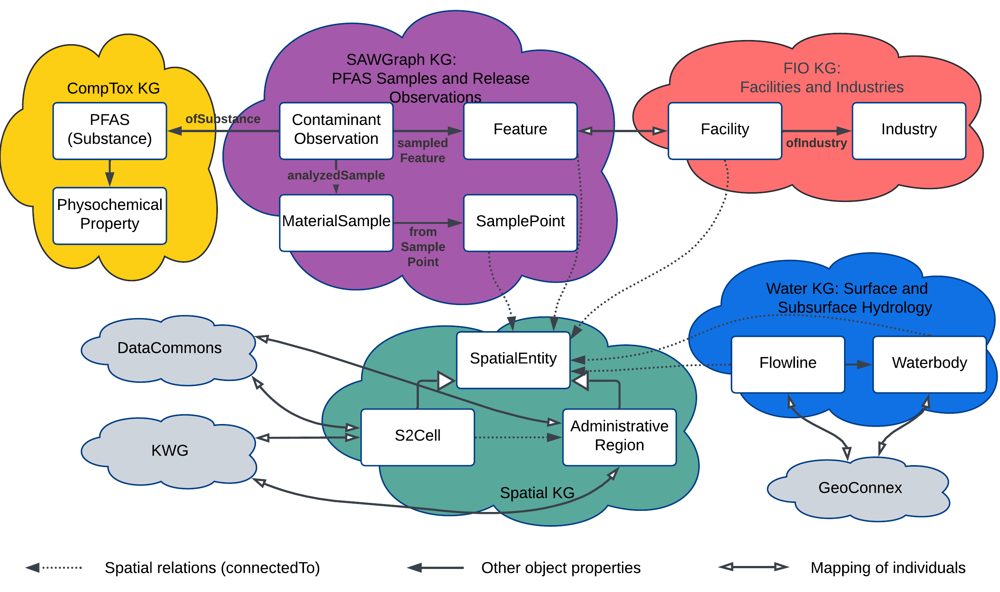

The SAWGraph Knowledge Graph provides a comprehensive view of PFAS contamination, potential sources, and potential impacts.
This data is organized into a series of interconnected knowledge graphs to facilitate reuse and modularize the large graphs.
SAWGraph integrates data from multiple federal and state sources. The primary data sources include:
| Repository | Name | Type | Description | Source | Source URL | Geospatial Metadata URL (to comply with Geospatial Act of 2018) |
|---|---|---|---|---|---|---|
| Sawgraph-KG | Water Quality Samples (WQP) | Samples | Surface and groundwater locations (WQP sites), PFAS test results | USGS, states and tribes, EPA | Water Quality Portal | Water Quality Portal User Guide |
| Sawgraph-KG | Maine EGAD | Samples | PFAS samples from Maine Environmental and Geographic Analysis Database (EGAD) | Maine DEP | Maine EGAD Samples | Maine EGAD Metadata |
| FIO | Facility Registry Service / Envirofacts | Facilities | Facilities and program records about facilities (location, identifiers, NAICS) from different state and EPA program information systems | EPA | EPA Envirofacts | |
| FIO | NAICS (North American Industry Classification System) | Industries | Industry Classification System to categories businesses and facilities | US Census Bureau | NAICS | |
| FIO | PFAS Industries | Industry Collection | Industries to research for PFAS use compiled by Environmental Council of States workgroup | ECOS | ECOS PFAS Industry Data | |
| FIO | PFAS Industries | Industry Collection | PFAS Handling Industry Sectors list compiled by EPA | EPA PFAS Analytic Tools | EPA PFAS Analytic Tools Data Sources | |
| Hydrology | Flowlines (NHDPlus v2) | Surface Water Flowlines | Surface water flowlines (small catchment realizations) with downstream connectivity for network tracing | USGS | NHDPlus V2 | NHDPlus V2 UserGuide |
| Hydrology | Waterbodies (NHDPlus v2) | Surface Water Bodies | Surface water bodies, named and unnamed, including ponds, lakes, and some marshes/wetlands | USGS | NHDPlusV2 | NHDPlus V2 UserGuide |
| Hydrology | Wells | Water Wells | Primarily private drinking water wells | Individual States Moving toward a single source like USGWD or NWWDB |
ISGS ILWATER
MGS Maine Well Database MGS Maine Well Database Unlocated MGS Maine Well Database Geoserver |
ISGS ILWATER Map MGS Maine Well Database Metadata MGS Maine Well Database Unlocated Metadata Maine DACF Water Well Database Metadata |
| Hydrology | Aquifers | Aquifers | Aquifers at various scales, from large national aquifer systems to more local aquifers, from deep bedrock to shallow sand and gravel | Individual States |
IL ISGS Acquifers Maine DACF Aquifers |
|
| Hydrology | Safe Drinking Water Information System | Public water systems | Basic information about each public water system, including violation and enforcement information | EPA | SDWIS | SDWIS Metadata |
| Spatial | Administrative Regions | States (level 1) Counties (level 2) County subdivisions (level 3) |
Political units, boundaries, FIPS codes, and hierarchy | KnowWhereGraph (Levels 1 & 2) Census Bureau (Level 3) |
KnowWhereGraph Census Bureau TIGER/linefiles |
Each Census Bureau shapefile includes a *.iso.xml metadata file |
| Spatial | S2 Cells | Level 13 S2 cells | Level 13 S2 cells | KnowWhereGraph | KnowWhereGraph |